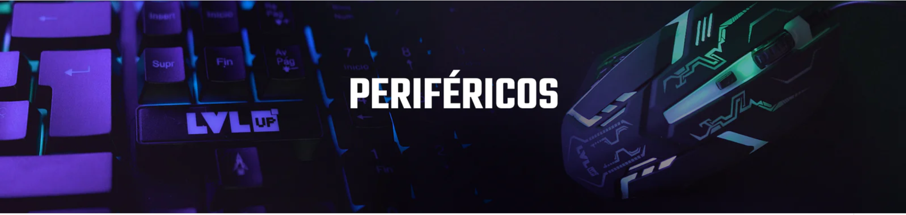

Bienvenida

¡Bienvenidos al curso de periféricos!
En este curso, exploraremos el mundo de los periféricos informáticos, desde teclados y ratones hasta escáneres y cámaras web. Aprenderás cómo funcionan estos dispositivos, cómo seleccionar el mejor para tus necesidades y cómo mantenerlos en buen estado.
Esperamos que disfrutes aprendiendo sobre estos importantes componentes de la informática y que puedas aplicar lo que aprendas en tu vida personal y profesional.
¡Empecemos!